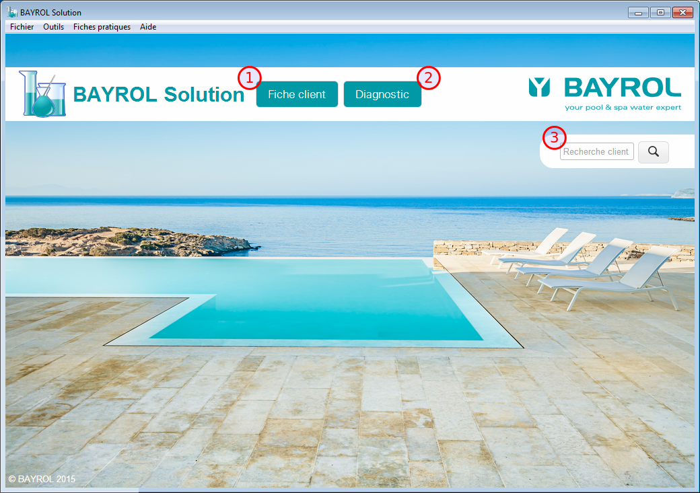
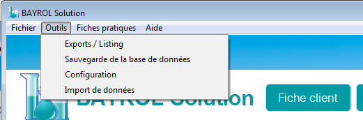

L'écran d'accueil permet d'accéder aux fonctionnalités du logiciel BAYROL Solution.
|  |
|
La barre de menu en haut de la fenêtre du logiciel permet d'accéder aux fonctionnalités avancées du logiciel BAYROL Solution et reste accessible à n'importe quel moment.
Le menu Fichier contient :
Le menu Outils contient :
Le menu Fiches pratiques contient des fiches pratiques à visualiser ou imprimer
Le menu Aide contient :